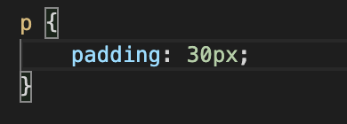
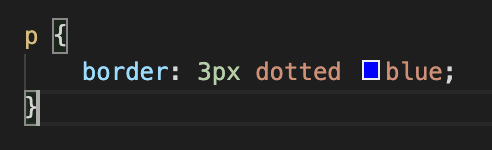

The CSS Box Model:
Padding, Borders and Margins
Friday 14th February 2020
I decided to write my technical blog post on the CSS box model as it’s something I find myself frequently getting confused with - I’m not sure if it’s just me, but I always seem to mix up padding and margins. In saying this, it’s a pretty simple concept once you wrap your head around it, so I wanted to try and explain it in layman’s terms to benefit my own learning, as well as anybody’s who’s reading this.
This is a diagram of the CSS box model:

Doesn’t look too crazy, huh?
I find an easy analogy for the CSS box model is this:
Imagine you’re standing on concrete and draw a circle around yourself with chalk.
In this scenario, you would be the content, the space between where you’re standing and the chalk would be the padding,
the chalk line itself would be the border and the space outside of the chalk line would be the margin.
So let’s break this down, starting with…
Padding
The padding properties are designed to control the space around the content of an element, but still inside the border.
You can set each side of an element’s padding individually, using “padding-top:”, “padding-left:” etc. or you can set them all at the same time by just putting one padding value. An example for a paragraph element with 30px padding might look like this:
Borders
Next up, borders. The border properties allow you to control the colour, width and style of a border.
Going back to our earlier scenario, you might have blue chalk, white chalk, pink chalk, or any other colour you fancy - this would be your border colour. You might draw a really thin line or a super thick line - this would be your border width. Lastly, you might draw a solid line, a dotted line, a dashed line… You get the picture - this would be your border style.
You could go through and define these properties individually, but luckily for us, these can all be defined in just one line of CSS. Here is an example of what a 3px wide, dotted blue border would look like:
Margins
The margin properties are used to control the space around an element’s border.
You can either define each margin individually, as below:
...Or, you can define them “shorthand”. Keep in mind that they must be defined in a clockwise order (top, right, bottom, left), like this:
Something to note with margins is that if two elements are stacked on top of one another and they both have vertical margins defined, the margins will automatically collapse and take on only the greater margin’s value.
I could go much deeper into all of these functions of CSS and talk about their various uses and values, but for today I only wanted to do a brief introduction to the world of the CSS box model.
I hope this has helped you to understand padding, borders and margins a little more clearly.
Until next time!
Ellora